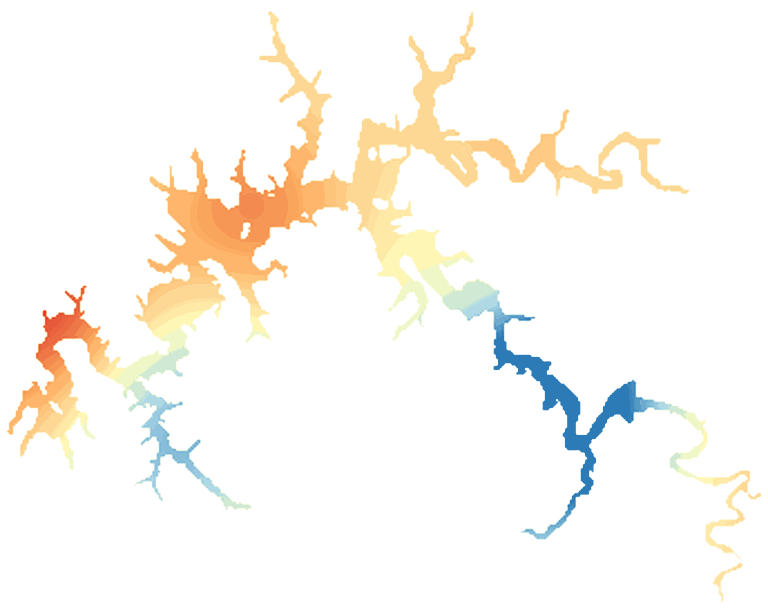

LakeScope › TN
Dale Hollow Lake today
Updated 2026-11-26 - Atlas Labs
Clear water, 56°F water, level falling, near normal, calm tomorrow afternoon.
Water level
637.38 ft
U.S. Army Corps of Engineers - 2026-11-26
7-day trend: falling (-0.37 ft). Compared with normal for this date: -0.3 ft (same weeks, 2024-2025).
Water clarity and algae
Clear water Last clear view: a few days ago.
Surface temperature
56°F
seen from space on 2026-11-22

Ice
Open - 0% ice cover
Estimate from weather and satellite, not a measurement. Check the ice yourself before going on it.
Weather, next 3 days
| Day | Sky | High / low | Wind | Rain |
|---|---|---|---|---|
| Thursday | Rain Showers | 48 / 31°F | 10 mph NNW | 100% |
| Friday | Chance Snow Showers then Chance Rain Showers | 46 / 26°F | 15 mph WSW | 45% |
| Saturday | Sunny | 59 / 38°F | 10 mph SSW | 0% |
Sunrise 06:30 - sunset 16:26 - Full moon. National Weather Service.
Get the LakeScope app: alerts and the 3-D view of Dale Hollow Lake